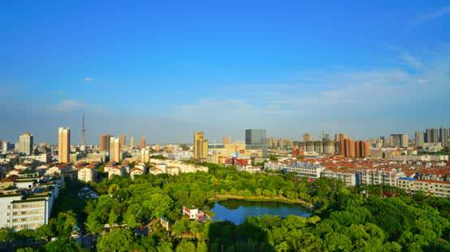

It borders the Yellow Sea in the east, the Yangtze River in the south, and faces Shanghai across the river. It is known as the "gateway to rivers and seas" and is known as "North Shanghai".
Haimen District has a total area of 1,148.77 square kilometers and a registered population of 995,900 (2018). Haimen District is a famous "hometown of science and technology", "hometown of textile", "hometown of architecture", "hometown of education", "hometown of longevity", "national health city", "national environmental protection model city" and "national ecological demonstration zone" in China. In December 2017, he was elected as one of the top 100 industrial counties in China.
In January, 2019, Haimen was recognized as an advantageous area for agricultural products with Chinese characteristics.
The video is aerial footage of a tourist attraction in Haimen.
